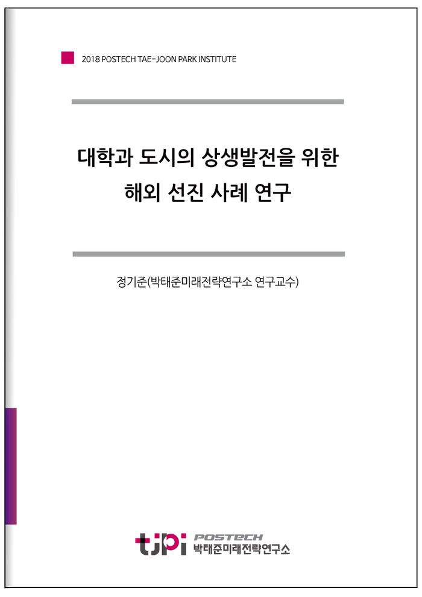

저자 정기준(박태준미래전략연구소 연구교수)발간일 2018.12.30

요 약
포스텍 박태준미래전략연구소는 2018년 10월 네덜란드 암스테르담, 덴마크 코펜하겐, 스웨덴 말뫼, 독일 뒤스부르크를 방문하였다.
이 도시들은 4차 산업혁명시대에 발맞추어 각 지역의 특성에 맞게 스마트시티 구축 및 도시재생을 성공적으로 이루어 나가고 있다. 본 연구를 통해 이들의 성공사례를 벤치마킹하여 더 나은 포항의 미래를 계획하고 준비하는 데 도움이 되고자 한다.
세부내용은 본 보고서에 자세히 기술되어 있다.
○ 네델란드
암스테르담은
마트시티 플랫폼을 구축하여 6개 분야 -‘인프라 스트럭쳐와 테크놀로지’, ‘에너지, 물, 쓰레기’, ‘이동성’, ‘순환도시’, ‘거버넌스와 교
육’, ‘시민과 생활’ 등- 에 대한 프로젝트를 진행 중에 있다.
○ 덴마크
덴마크 공대(DTU), 앨버트슬런드 시정부, Gate21 단체(39개 지자체, 8개대학, 38개 기업이 참여)가 협력하여 국가의 스마트시티를 위해 협업하고 있다.
○ 스웨덴
말뫼시의 부활에는 말뫼시와 스웨덴 중앙정부의 강력한 리더십이 뒷받침되었기 때문에 가능했다.
○ 뒤스부르크
현재 뒤스부르크는 ‘고속통신’, ‘전자정부’, ‘경제’, ‘교통’, ‘스마트리빙’, ‘사회기반시설’, ‘교육’ 등 7개 분야에 대한 스마트시티를 추진하기 위하여 준비 중에 있다.
목 차
요 약
Ⅰ. 해외 방문 도시 개요
1. 취지, 방문기간, 목적
2. 방문도시 및 기관 개요
Ⅱ. 방문도시 및 기관별 조사
1. 암스테르담 (네덜란드)
2. 코펜하겐 (덴마크)
3. 말뫼 (스웨덴)
4. 뒤스부르크 (독일)
Ⅲ. 시사점
내 용
[2018 TJPI 미래전략 보고서]대학과 도시의 상생발전을 위한 해외 선진 사례 연구
정기준(박태준미래전략연구소 연구교수)
PDF 파일을 다운받으세요.
2018 TJPI산학연_해외선진사례_보고서_보고서(포스텍박태준미래전략연구소).pdf